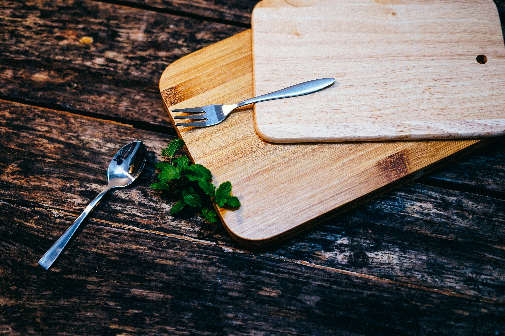

An online record as I look to improve my cooking skills
I've been learning to cook for years, mostly by following recipes, but that hasn't given me the instinct to put a dish together from scratch.I've decided to experiment with a different approach: I'll study cooking techniques, the science behind recipes, and my tools, then publish what I learn alongside a small selection of dishes I make.Each with a photo and a note on what I picked up along the way. Learning to cook is a tough skill to master, but I believe that practice and knowledge can get anyone there. Let the journey begin!

Crafting a Great Dish?
Foundational elements like fresh, in-season ingredients are crucial—the food should taste like itself. Next is flavor. There are five main tastes, and balancing them in your dish is what gives it depth. Then there's visual appeal. Plating food so it looks appealing to the eye brings a smile to my face and makes me think the cook cares not just about what goes into the dish, but about who's going to eat it.

Bare Essentials
I learned that in order to get started, you don't need expensive equipment or a full set of kitchen implements. A cutting board, a chef's knife, and measuring cups and spoons are all you need to begin.
My Starting Point
I've been cooking mostly from recipes and haven't improved much. I'd still call myself a beginner.
But I have the passion: I love eating flavorful food, and seeing a well-plated meal brings me a sense
of happiness. Cooking used to be a chore, but it has transformed into a time to experiment and relax.
I think a basic knowledge of cooking techniques, flavors, and working slowly will be essential to improving.
This journal is just getting started—I'll add more content as I learn. So come by from time to time.
Thanks for stopping by.
—Diana